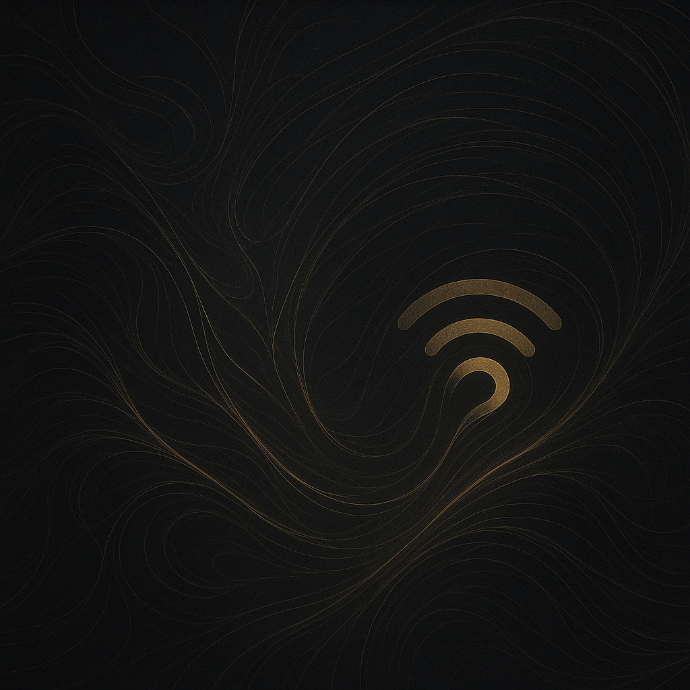

Building an AI Voice Agent
Learn how I built a real‑time voice agent integrating SIP and OpenAI's realtime API.
Learn how I built a real‑time voice agent integrating SIP and OpenAI's realtime API.
A deep dive into designing systems with deadline‑aware AI pipelines and communication‑aware delays.
